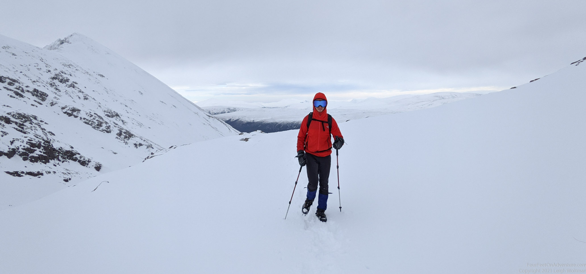
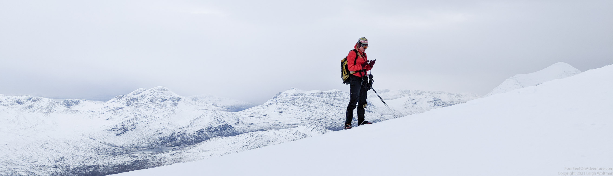
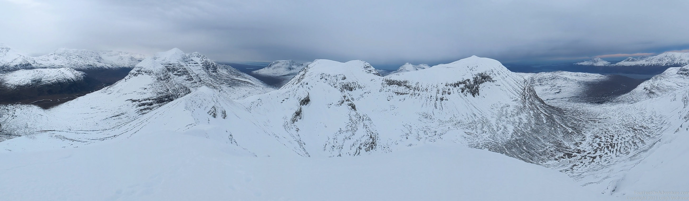
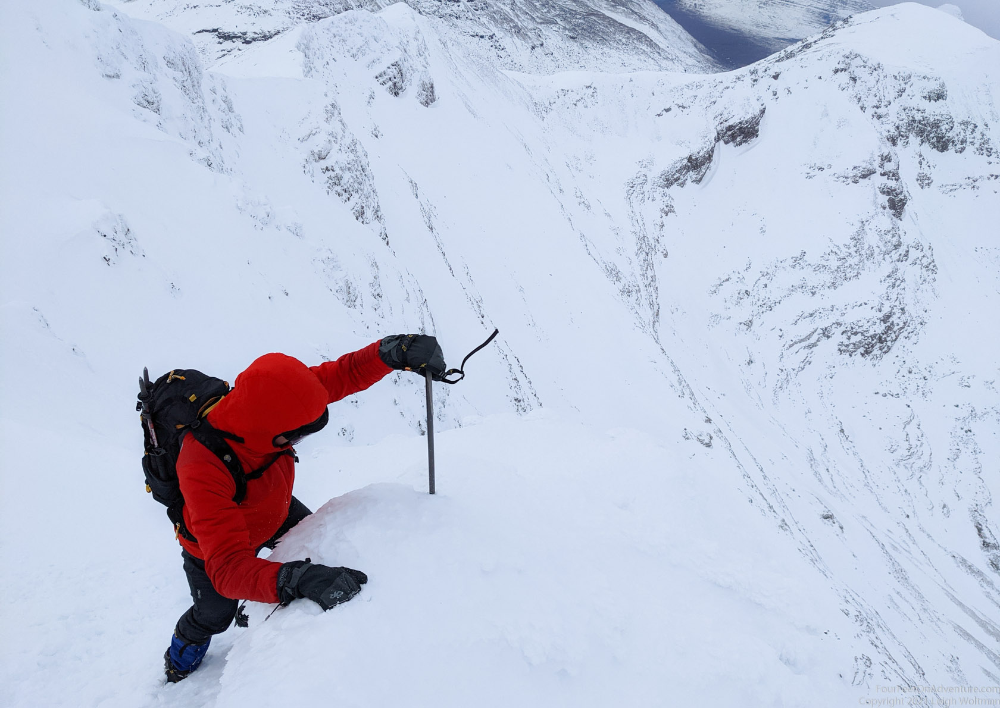
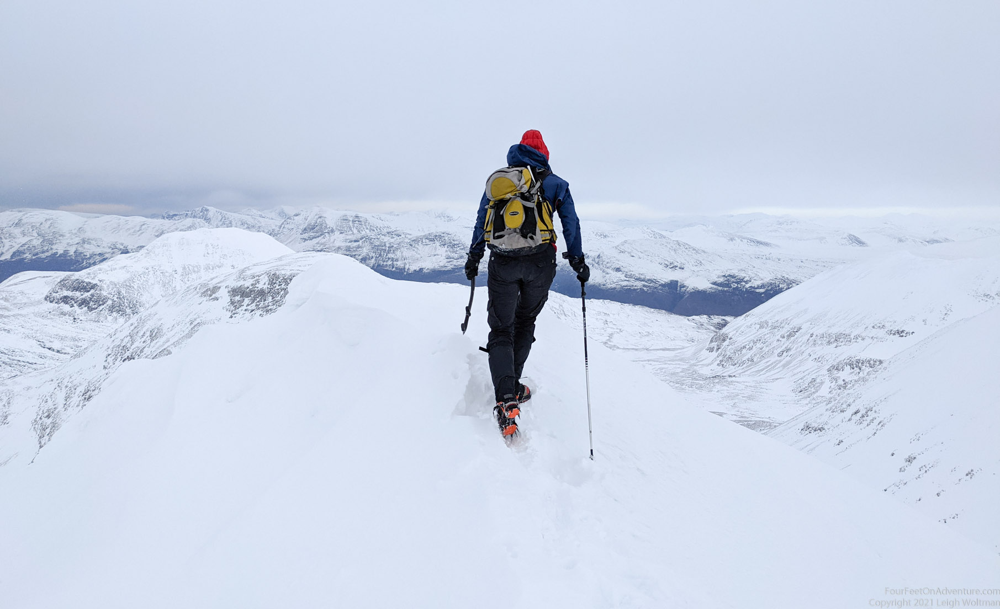
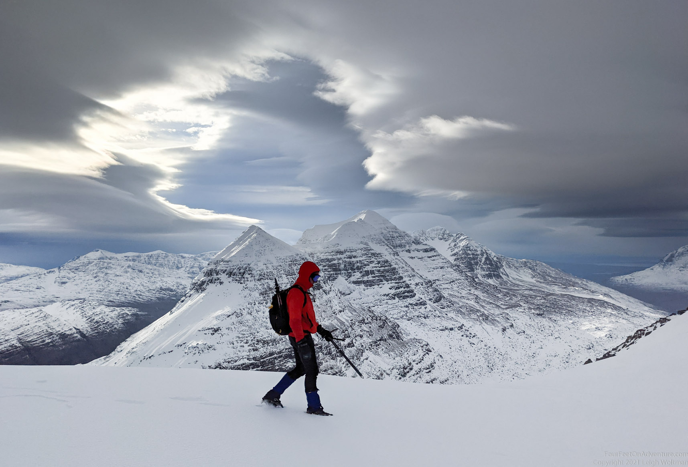
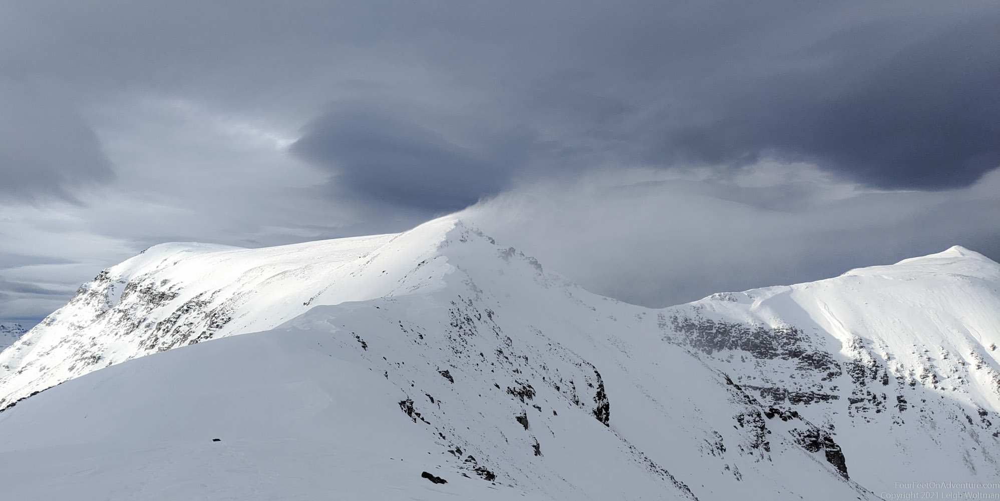
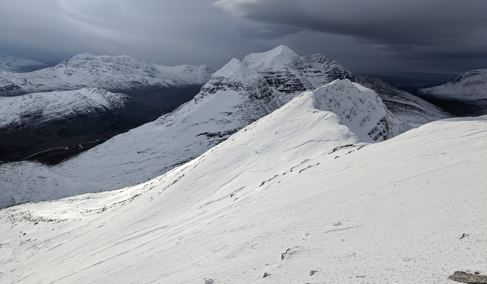
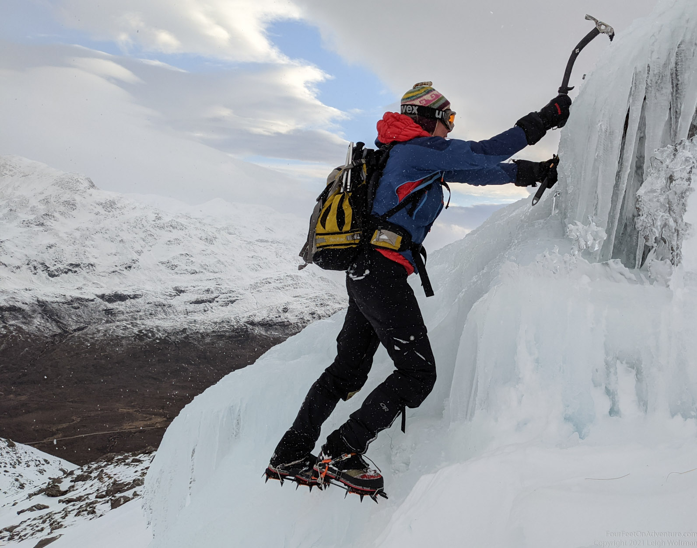

This is the only one of the three amazing Torridon hills we hadn’t been up yet and the both weather and avalanche forecast looked good for giving it a try. We parked at the path to Coire an Laoigh, the main approach route. Temperatures were below zero, and the ground was nicely frozen. The snow wasn’t all the way to the car park, but it didn’t take long before our trail became icy and then snowy. We met a person going down, he must have been up quite early. Had he seen the wind predictions? Or just an early bird? He belonged to the only other car in the carpark, so we had the mountain to ourselves.


It was a bit of a slog up, but we were lucky to be able to follow other footsteps in the snow and not have to trail everything ourselves. Less romantic maybe, but a huge energy and time saver as each step was about knee deep. Once on top of Spidean Coire nan Clach we were rewarded with amazing views. The wind was strong, but didn’t blow us off, so all good.


We found a nice sheltered spot near the top to have our lunch. What to do next? It takes so much effort to get yourself to a top, it seemed a waste to just head back down again. We decided to follow the ridge to the West for a bit and see if we felt comfortable with the wind and snow conditions.



It was doable, but just. />
We decided not to make it the 3ish km to the other top, but stop halfway and head back. Had the wind gone up a bit more, we would have difficulties walking, which is not ideal on a ridge. If the wind would have become so strong that walking back on the ridge did not seem safe anymore, we didn’t want to be blown off, the only other way down was down a steep scree chute where avalanche risk was predicted to be moderate. Far from a good idea. We did not think it was worth the risk getting trapped, and also it was becoming a bit late. All and all better to head back.

Instead of heading back in Coire an Laoigh, we decided to walk to the top itself, Stuc Coire an Laoigh, and scramble down from there. It’s a summer scramble grade 1, should be okay to head down in snow conditions. And it was. We were rewarded with a little blue ice field where we couldn’t resist taking our axes out for a little ice climb.

All in all a beautiful adventurous day out with good decisions and lots of snow, wind and fun, one to remember.